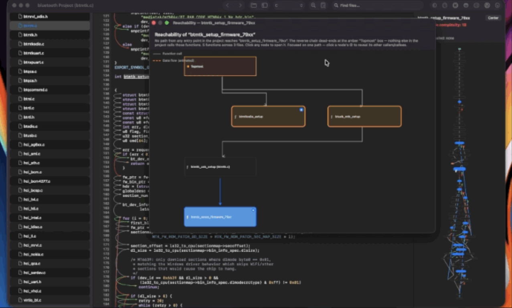
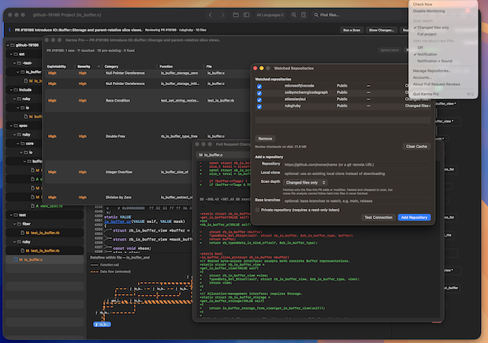
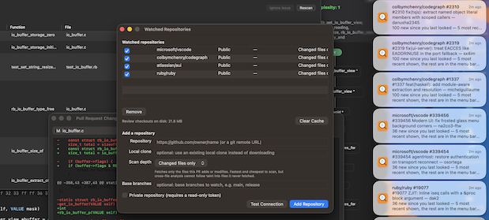
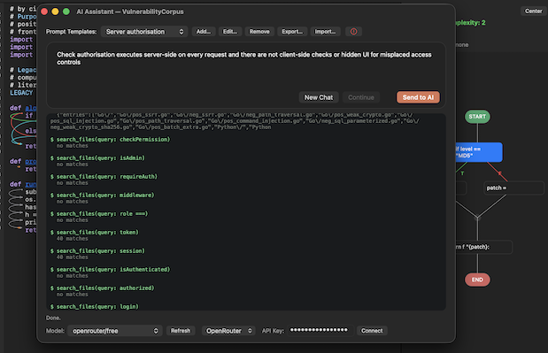

macOS · open source · Apache-2.0
The code security review tool
Static analysis that reads your source, inter-procedural taint tracking over parse trees, a heuristic engine, a Bayesian classifier trained on software patches and AI scanning. Then the graphs, the flows and the entry points, from the same index.
Capabilities
Findings
Every finding
says how it was found.
A structural finding, a matched pattern and a model opinion are not the same claim, so the app never mixes them. Each row carries the engine that produced it, and a grade that weighs exploitability and reachability, not just severity.
Critical, High, Medium and Low are assigned per finding. A model opinion is tagged AI and sits with the rest rather than in a separate list, so a reviewer sees the whole picture in one place.
| Grade | Engine |
|---|---|
| Critical | AST |
| Critical | AI |
| High | Heuristic |
| High | AST |
| Medium | AI |
| Low | AST |
Diagrams
Dataflows
Every diagram is generated from the project you have open. Click a node and you are on the line.

Pull requests
It watches the repos
you point it at.
The menu bar item keeps a list of repositories and the pull requests open on them, and tells you when changes. Monitoring stays switched off until you turn it on.
Review is the only action that scans. Not Now and Ignore never do, so dismissing a notification can never start a scan on its own.


Assistant
Ask about the code
you reviewing.
Connect OpenRouter, paste the key, press Connect, and pick any model: Claude, GPT-4o, Gemini, Llama, DeepSeek, Mistral. Or point it at Ollama and stay on the machine. The open project's path travels with every prompt in the system message, so the answer is about your code.
Right-click any line for (AI) How to fix it, with the surrounding context sent along. The same connection also runs as a scanning pass, which is where the AI-tagged findings above come from.
Keys are stored on your machine and remembered across launches. Models are listed live from OpenRouter, with a refresh button. You also need a valid token at the AI assistant in order to perform AI scans.

Install
Installation
The release is self-signed, so macOS stops it the first time and asks whether you trust it. That is expected. Open it once, confirm, and it runs normally from then on.
Needs macOS 12.0 Monterey or newer.
If the Open option never appears, the quarantine attribute is still on the bundle.
Clear it once with xattr -d com.apple.quarantine "/Applications/Karma Pro.app"
Build
Compile it
yourself.
One Swift package, one script. ./build.sh compiles everything in
Sources/ and assembles Karma Pro.app in the repository root.
Xcode 14 or newer, or Swift 5.7 and up.